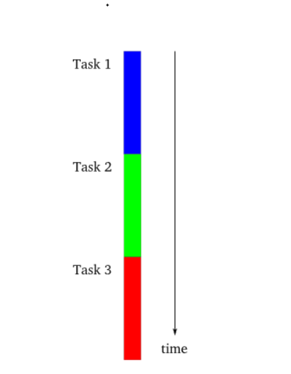
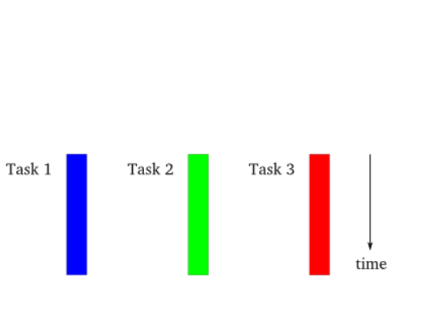
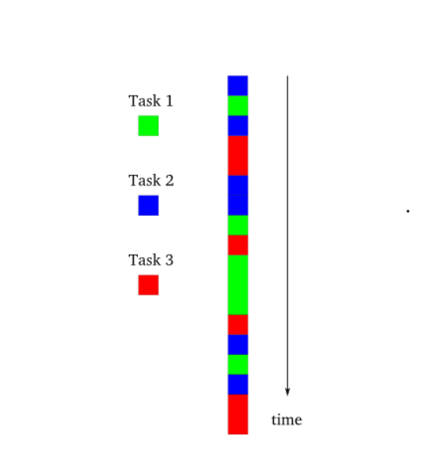

对于多线程，经常使用的是Thread。在了解Task之前，如果要使用多核的功能可能就会自己来开线程，然而这种线程模型在.net 4.0之后被一种称为基于“任务的编程模型”所冲击，这就是Task。
Task会比Thread具有更小的性能开销，Task是架构在Thread之上的就是说Task最终还是会抛给线程去做，并且任务跟线程不是一对一的关系，比如开 10 个任务并不是说会开 10 个线程，这一点任务有点类似线程池，但是任务相比线程池有很小的开销和精确的控制。Task类的表示单个操作不返回一个值，通常以异步方式执行，Task 对象是"基于任务的异步模式"首次引入.NET Framework 4 中。
因为由执行工作 Task对象通常以异步方式执行在线程池线程上而不是以同步方式在主应用程序线程，可以使用Status属性，以及 IsCanceled,IsCompleted, 和 IsFaulted属性，以确定任务的状态
相关概念理解
- 同步（Synchronous）
- 异步 (Asynchronous)
- 阻塞 (Blocking)
- 非阻塞(Nonblocking)
同步/异步指的是在客户端
同步意味着：客户端提出了一个请求以后，在回应之前只能等待
异步意味着：客户端提出一个请求以后，还可以继续提其他请求
阻塞/非阻塞指的是服务器端
阻塞意味着：服务器接受一个请求后，在返回结果以前不能接受其他请求
非阻塞意味着：服务器接受一个请求后，尽管没有返回结果，还是可以继续接受其他请求
同步与异步
同步和异步关注的是消息通信机制 (synchronous communication/ asynchronous communication)
所谓同步，就是在发出一个调用时，在没有得到结果之前，该调用就不返回。但是一旦调用返回，就得到返回值了。换句话说，就是由调用者主动等待这个调用的结果。
而异步则是相反，调用在发出之后，这个调用就直接返回了，所以没有返回结果。换句话说，当一个异步过程调用发出后，调用者不会立刻得到结果,而是在调用发出后，被调用者通过状态、通知来通知调用者，或通过回调函数处理这个调用。(典型的异步编程模型比如Node.js)
同步通信机制
你打电话问书店老板有没有《分布式系统》这本书，如果是同步通信机制，书店老板会说，你稍等，“我查一下”，然后开始查啊查，等查好了（可能是5秒，也可能是一天）告诉你结果（返回结果）
异步通信机制
书店老板直接告诉你我查一下啊，查好了打电话给你，然后直接挂电话了（不返回结果）。然后查好了，他会主动打电话给你。在这里老板通过"回电"这种方式来回调
阻塞与非阻塞
阻塞和非阻塞关注的是程序在等待调用结果（消息，返回值）时的状态，阻塞调用是指调用结果返回之前，当前线程会被挂起。调用线程只有在得到结果之后才会返回。非阻塞调用指在不能立刻得到结果之前，该调用不会阻塞当前线程
Example
你打电话问书店老板有没有《分布式系统》这本书，如果是阻塞式调用，你会一直把自己“挂起”，直到得到这本书有没有的结果，如果是非阻塞式调用，你不管老板有没有告诉你，你自己先一边去玩了， 当然你也要偶尔过几分钟check一下老板有没有返回结果，在这里阻塞与非阻塞与是否同步异步无关。跟老板通过什么方式回答你结果无关
模型图例
单线程同步模型

多线程模型

异步模型

基础
创建任务
new TaskFactory()
使用实例化的TaskFactory类
1 | var t1 = new TaskFactory().StartNew(() => Console.WriteLine("new TaskFactory().StartNew")); |
Task.Factory
使用Task静态属性Factory
1 | var t2 = Task.Factory.StartNew(() => Console.WriteLine("Task.Factory")); |
new Task()
使用Task的构造函数, 实例化Task对象时，任务不会立即执行，而是指定Created状态，通过Task.Start()方法启动
1 | var t3 = new Task(() => Console.WriteLine("Task Constructor")); |
Task.Run
.Net4.5 新增功能使用Task类的Run方法
1 | var t4 = Task.Run(() => Console.WriteLine("Task.Run")); |
注意：使用Task.Run/Task.Factory.StartNew/new TaskFactory().StartNew()方法运行的任务会立即开始工作，无需显式调用这些任务的Start方法
同步任务
任务不一定要使用线程池中的线程，也可以使用其他线程，任务也可以同步进行，以相同的线程作为主调线程
1 | static void Main(string[] args) |
1 | var t1 = new Task(() => TaskMethod("t1")); |
使用单独线程的任务
如果任务的代码需要长时间运行，应该使用TaskCreationOptions.LongRuning告诉任务调度器创建一个新线程，而不是使用线程池中的线程。此时线程可以不受线程池管理
1 | var t1 = new Task(TaskMethod, TaskCreationOptions.LongRunning); |
Task生命周期
| 状态 | 描述 |
|---|---|
| Created | 该任务已初始化，但尚未被计划 |
| WaitingForActivation | 该任务正在等待 .NET Framework 基础结构在内部将其激活并进行计划 |
| WaitingToRun | 该任务已被计划执行，但尚未开始执行 |
| Running | 该任务正在运行，但尚未完成 |
| WaitingForChildrenToComplete | 该任务已完成执行，正在隐式等待附加的子任务完成 |
| RanToCompletion | 已成功完成执行的任务 |
| Canceled | 该任务已通过对其自身的 CancellationToken 引发 OperationCanceledException 对取消进行了确认，此时该标记处于已发送信号状态；或者在该任务开始执行之前，已向该任务的 CancellationToken 发出了信号 |
| Faulted | 由于未处理异常的原因而完成的任务 |
Task任务控制
| 方法 | 描述 |
|---|---|
| Task.Wait | task1.Wait();就是等待任务执行完成，task 的状态变为 Completed |
| Task.WaitAll | 待所有的任务都执行完成 |
| Task.WaitAny | 等待任何一个任务完成就继续向下执行 |
| Task.ContinueWith | 第一个 Task 完成后自动启动下一个 Task，实现 Task 的延续 CancellationTokenSource |
| CancellationTokenSource | 通过 cancellation 的 tokens 来取消一个 Task |
Task返回类型
void
不关心结果，返回 void 类型
1 | [TestMethod] |
Task
关心是否完成，返回 Task 类型
1 | public void Task_Result_Task() |
Task<T>
调用方法要从调用中获取一个T类型的值，异步方法的返回类型就必须是Task<T>。调用方法从Task的Result属性获取的就是T类型的值
1 | public async Task Task_Result_TaskTAsync() |
连续任务
在指定任务完成后调用另一个指定任务
1 | public void Task_ContinueWith_Example() |
使用TaskContinuationOptions枚举的值可以指定连续任务只有在起始任务成功或失败结束时启动
1 | Task t2 = t1.ContinueWith(TaskMethod2, TaskContinuationOptions.NotOnCanceled); |
嵌套Task
关联嵌套
在创建cTask时，加入了参数TaskCreationOptions.AttachedToParent，这个时候，cTask和pTask就会建立关联，cTask就会成为pTask的一部分
1 | [] |
非关联嵌套
外层的pTask运行完后，并不会等待内层的cTask，直接向下走先输出了Flag。这种嵌套有时候相当于创建两个Task，但是嵌套在一起的话，在Task比较多时会方便查找和管理，并且还可以在一个Task中途加入多个Task，让进度并行前进
1 | [] |
在Task内部创建Task，如果父任务在子任务之前结束，父任务状态就显示为WaitingForChilderenToComplete。所有的子任务也结束时，父任务的状态就改为RanToCompletion，如果使用TaskContinuationOptions枚举值创建子任务时会有不同结果，取消父任务也会取消子任务
Task取消
单个任务
1 | [] |
多个任务
1 | [] |
定时取消
1 | static void Main(string[] args) |
工作原理
程序运行主线程创建->创建CancellationTokenSource对象->设置task在指定毫秒数后取消(这里是 8000)->创建task并传入CancellationTokenSource对象生成的token，循环打印 1~30，取消标记为true则抛出异常中止任务，false则正常输出。在输出前等待 500 毫秒(避免 8000 毫秒还没到任务就已经执行完成)->使用try/catch包裹t1.Wait()等待任务执行完成语句，并捕获处理异常。这里任务在执行完 15 次的时候被取消
取消时回调
CancellationTokenSource.Token.Register()，使用Register，向取消标记登记一个回调方法。应用程序调用CancellationTokenSource 对象的 Cancel 方法时，这个回调就会运行。但是不能保证这个方法在什么时候执行,可能在任务执行完自己的取消处理之前或之后,也可能在那个过程之中
1 | [] |
问题记录
async/await并不能提升性能?
问题描述：所谓的异步操作就是A线程在执行任务的时候，执行到一半再把任务交给B线程，然后A线程开始等待B的执行完成了，这不还是同步的吗?
异步编程不能提高性能。异步编程只是提供一种简单的编程模型来提高系统的响应能力，比如，如果在UI线程上执行长时间IO操作，在操作完成之前界面就处在无法操作的状态。
可以提高性能的是并行技术，比如任务并行库（TPL，Task Parallel Library）、并行LINQ（PLINQ）等，这些技术可以充分利用CPU来提高计算性能。一般来说，耗时的IO操作使用异步简化代码，耗时的计算操作使用并行来提高性能
比如服务端最大处理请求是100个线程，那么同步模式下，150个请求过来，就有50个请求需要等待执行。async/await 模式下，正在执行的100个线程 可以空闲出来 处理后来的50个请求，前面100个请求异步完成后，再通过上下文切换到当前的100个线程，处理完后续的流程。工作线程是在不停的切换过程中提升了并发效率。而在单个请求中，async/await是有线程上下文切换的性能损耗，所以在处理一个本来就很快速的逻辑,例如读一个Redis缓存，那么性能会有比较显著的下降
总结：异步编程只是提高了线程的利用率，针对一个本来就很“快”的操作，可能异步还不如同步。因为线程上下文的切换也会带来性能损耗
async/await死锁问题
可能发生死锁的程序类型
WPF/WinForm程序- asp.net(不包括asp.net core)程序
什么情况下会产生死锁?
调用 Task.Wait() 或者 Task.Result 立刻产生死锁的充分条件
- 调用
Wait()或Result的代码位于UI线程 Task的实际执行在其他线程，且需要返回UI线程
死锁的原因?
UWP、WPF、Windows Forms程序的 UI 线程都是单线程的。为了让使用了async/await的代码像使用同步代码一样简单，WPF 程序的Application类在构造的时候会将主UI线程Task的同步上下文设置为DispatcherSynchronizationContext的实例，当Task的任务结束时，会从AsyncMethodStateMachine中调用Awaiter的OnComplete()方法，而await后续方法的执行靠的就是OnComplete()方法中一层层调用到DispatcherSynchronizationContext里的Post方法
1 | /// <summary> |
这里就是问题的关键！！！
如果_dispatcher.BeginInvoke(_priority, d, state);这句代码在后台线程。那么此时UI线程处于Wait()/Result调用中的阻塞状态，BeginInvoke中的任务是无论如何也无法执行到的，于是无论如何都无法完成这个Post任务，即无论如何也无法退出此异步任务的执行，于是Wait()便无法完成等待，产生死锁
Example
1 | DoAsync().Wait(); |
无论是WPF还是UWP，只要在UI线程上调用上述代码，必然死锁
There Is No Thread
读写文件，访问网络，这些 IO 阻塞的操作执行时，里面根本就没有线程。详情请阅读：There Is No Thread
还有另一些操作，也没有后台线程的参与，于是也不存在从后台线程回到主线程导致死锁的情况。如Task.Yield，还有InvokeAsync，它们也不会造成死锁。如果是控制台程序，或者一个普通的非UI线程，其SynchronizationContext为null，那么异步任务执行完后不需要回到原有线程，也不会造成死锁
不会造成死锁的充分条件
- 异步操作执行完后不需要回到原有线程（例如非 UI 线程和控制台线程）
- 异步操作不需要单独的线程执行任务
如何避免死锁?
- 在 UI 线程，如果使用了
async/await，就尽量不要再使用Task.Wait()/Task.Result了，就一直异步一条路走到黑好了（微软称其为Async All the Way） - 如果可能，尽量在异步任务后添加
.ConfigureAwait(false);这样，异步任务后面继续执行的代码就不会回到原UI线程了，而是直接从线程池中再取出一个线程执行；这样，即便UI线程后续可能有别的原因造成阻塞，也不会产生死锁了；把原来的代码改成这样，就不会死锁了
只能是一路async/await。微软将其描述为：async/await 会像病毒一样在你的代码中传播。
Others have also noticed the spreading behavior of asynchronous programming and have called it “contagious” or compared it to a zombie virus.
这句话的原文参见：Async/Await - Best Practices in Asynchronous Programming
如果你是类库提供者，因为不确定调用者程序是WPF/Winform…，为了防止代码调用者在同步方法中使用Wait()/Result调用异步方法，还需要考虑添加.ConfigureAwait(false);
1 | async Task DoAsync() |
这一句的目的是防止执行上下文切换回 UI 线程。
这样，即便真的使用 DoAsync().Wait() 也不会发生死锁。注意，整个方法调用链都需要使用.ConfigureAwait(false)才能够防止线程切换，在调用方的 Wait() 方法中发生死锁。
更多死锁相关
https://blog.walterlv.com/post/deadlock-in-task-wait.html
https://blog.walterlv.com/post/deadlock-of-invoke-in-lazy.html
https://blog.walterlv.com/post/deadlock-if-await-in-ui-lock-context.html
https://blog.walterlv.com/post/task-wait-may-cause-long-time-waiting.html
解决方法
https://blog.walterlv.com/post/using-configure-await-to-avoid-deadlocks.html
https://blog.walterlv.com/post/convert-async-to-sync-by-push-frame.html
参考
https://blog.csdn.net/WPwalter/article/details/78370706
https://docs.microsoft.com/en-us/archive/msdn-magazine/2013/march/async-await-best-practices-in-asynchronous-programming
https://www.cnblogs.com/qingfenglin/p/12058267.html
https://www.cnblogs.com/liqingwen/p/5844095.html
https://www.cnblogs.com/zhaoshujie/p/11082753.html
https://q.cnblogs.com/q/107005/
https://rubikscode.net/2018/06/11/asynchronous-programming-in-net-benefits-and-tradeoffs-of-using-valuetask/
https://blog.scooletz.com/2018/05/14/task-async-await-valuetask-ivaluetasksource-and-how-to-keep-your-sanity-in-modern-net-world/
https://www.cnblogs.com/ms27946/p/understanding-task-valuetask.html
https://www.cnblogs.com/ittranslator/p/13703279.html
https://devblogs.microsoft.com/dotnet/understanding-the-whys-whats-and-whens-of-valuetask/
https://www.cnblogs.com/wcrBlog/p/11690460.html
https://docs.microsoft.com/zh-cn/dotnet/csharp/programming-guide/concepts/async/async-return-types#generalized-async-return-types-and-valuetasktresult
https://q.cnblogs.com/q/124633/
https://www.cnblogs.com/dudu/p/9860959.html#!comments
http://labs.criteo.com/2018/10/net-threadpool-starvation-and-how-queuing-makes-it-worse/
https://www.cnblogs.com/xishuai/p/asp-net-sync-over-async.html